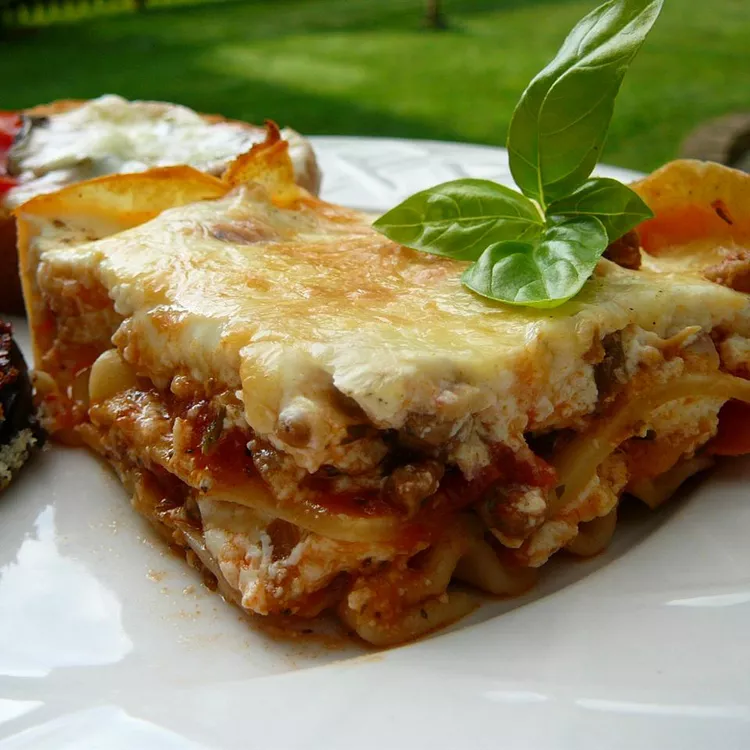

Grandma-Style Lasagna

Fancy restaurants may provide the latest in culinary delights, but nothing compares with grandma's test-tested recipe. Here's our favorite—it's easy to make, and delicious!
Ingredients
What You'll Need:
- 1 (8 ounce) package lasagna noodles
- ½ pound ground pork sausage
- ½ pound ground beef
- 1 clove garlic, minced
- 1 (28 ounce) can diced tomatoes
- 1 (8 ounce) can tomato sauce
- 1 tablespoon dried parsley
- ½ teaspoon dried basil
- ½ teaspoon dried oregano
- 1 pinch white sugar
- 1 (16 ounce) container sour cream
- 3 eggs, lightly beaten
- ¾ cup grated Parmesan cheese
- ½ cup chopped pitted green olives
- 2 teaspoons salt
- ¼ teaspoon ground black pepper
- 2 (12 ounce) packages shredded mozzarella cheese, divided
Steps:
- Step 1:
- Step 2: